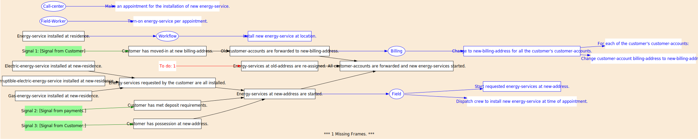
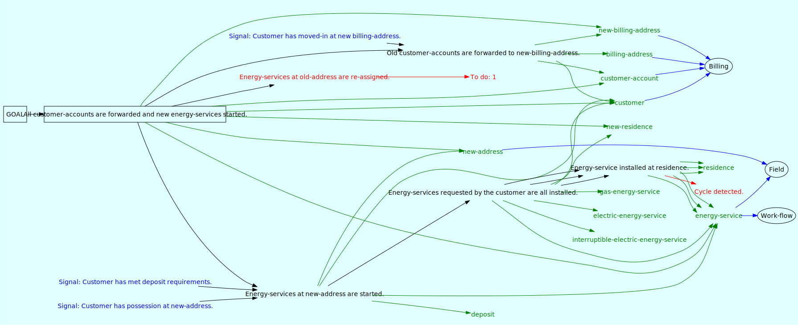
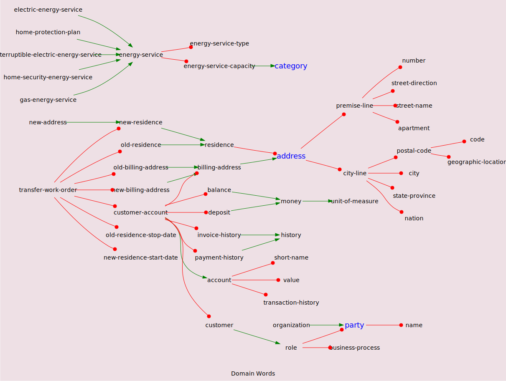

Graphs of an ontology provide hints about structural problems. In some cases, the graphing algorithm detects structural problems directly.
The ontology below defines a plan for handling a "customer transfer" at an energy utility. The customer is moving from an old residence to a new residence.
--- Task: Move customer to new-residence. Post: All customer-accounts are forwarded and new energy-services started. Pre: . Old customer-accounts are forwarded to new-billing-address. . Energy-services at new-address are started. . Energy-services at old-address are re-assigned. Actions: . None. (The task frame serves to define a compound condition.) --- Task: Forward old customer-accounts to customer's new-billing-address. Post: Old customer-accounts are forwarded to new-billing-address. Pre: . Customer has moved-in at new billing-address. [Signal from Customer] . (We expect the customer to call us when they move in?) Action: . Billing: Change to new-billing-address for all the customer's customer-accounts. --- Role: Billing. Action: Change to new-billing-address for all the customer's customer-accounts. . For each of the customer's customer-accounts: . . Change customer-account billing-address to new-billing-address. --- Task: Start the energy-services at the customer's new-address. Post: Energy-services at new-address are started. Pre: . Customer has possession at new-address. [Signal from Customer.] . Customer has met deposit requirements. [Signal from payments.] . Energy-services requested by the customer are all installed. Actions: . Field: Start requested energy-services at new-address. --- Task: Install or prove requested energy-services. Post: Energy-services requested by the customer are all installed. Pre: . Gas-energy-service installed at new-residence. . Electric-energy-service installed at new-residence. . Interruptible-electric-energy-service installed at new-residence. . (Note: One or more of these energy-services may already exist.) . (In that case, we will find the historic event in the world-base.) . (LOGIC ERROR: What if they don't want interruptible energy-service?) Action: . None. --- Task: Install energy-service at residence. Post: Energy-service installed at residence. (Should match pre-conditions above.) Pre: . None. . (Only come here when the condition has not already been satisfied by a pre-existing installation.) Action: . Workflow: Install new energy-service at location. --- Dictionary: Energy-service types. . Gas-energy-service is an energy-service. . Electric-energy-service is an energy-service. . Interruptible-electric-energy-service is an energy-service. --- Dictionary: Location names. . New-billing-address is an billing-address. . Billing-address is an address. . New-residence is a residence. . Old-residence is a residence. . A residence has an address. . New-address is synonym for new-residence. . An address has a premise-line. . Premise-line attributes include number, street-direction, street-name, apartment. . An address has a city-line. . City-line attributes include city, state-province, postal-code, nation. --- Dictionary: Customer role. . Customer is a role. . A role has a party. . A role has a business-process. . A party has a name. . An organization is a party. . An energy-service attributes include energy-service-type, energy-service-capacity. . energy-service-capacity is a category. . energy-service-capacity categories include kW, mW, ccf. . energy-service-type categories include electric, interruptible-electric, yard-light, street-light, gas. . A home-protection-plan is a energy-service. . A home-security-energy-service is a energy-service. . Customer-account is an account. . A customer-account has a customer. . A customer-account has a billing-address. . A customer-account has a balance. . A customer-account has a deposit. . A customer-account has an invoice-history. . A customer-account has a payment-history. . An invoice-history is a history. . A payment-history is a history. . A residence has an address. . A residence contains a collection of energy-services. . A balance is money. . A deposit is money. --- Dictionary: Work-Order. . A transfer-work-order attributes include old-residence, new-residence, old-billing-address, new-billing-address, customer-account, old-residence-stop-date, new-residence-start-date. . Old-billing-address is a billing-address. --- Role: Billing. Action: Change the billing-address for all the customer's customer-accounts. . For each of the customer's accounts: . . Change billing-address to new-address. --- Role: Work-flow. Action: Install new energy-service at location. . Call-center: Make an appointment for the installation of new energy-service. . Field: Dispatch crew to install new energy-service at time of appointment. --- Role: Field. Action: Dispatch field-worker to turn-on the energy-service at time of appointment. . Dispatcher: Find nearest available field-worker with turn-on capability just prior to the appointment start-time. . Dispatcher: Confirm field-worker availability. . Field-Worker: Turn-on energy-service per appointment. ---
The plan tree diagram shows the structure of the task frames. The arrows indicate precedence relations. White boxes indicate task frames by their post-conditions. Green boxes indicate signals which enable pre-conditions without any work being done by the agents in this plan. (The work might be done elsewhere.) Elipse nodes indicate the roles specified in task frame action statements. Blue-edge boxes down-stream from the role nodes indicate action statements that may be assigned to agents assigned to that role. Statements that are down-stream from the action statements are instructions to the agent.
In this case, the graphing algorithm has detected a missing task frame.
The data flow diagram shows the flow of data through the task frames to the agents. The basic idea is that task frame statements should be sufficient to convey data by instantiating the nouns to the real world instances. Although Simple English allows information to be drawn from the context (example: session) in which the plan is running, relying on this feature is not really a good idea. It can cause mistakes much as it would in a person-to-person communication.
In this case, the graphing algorithm has detected a cycle in the plan tree. It actually took some time to discover the cause of the cycle that was detected. You cannot see it in the graph, but it turns out that the cycle is due to a relatively subtle problem with the interpreter's handling of supertypes.
The collection of nouns that flow to the agents (on the blue arrows) indicates the data that is required to execute the plan. Red nouns (if any) are part of the agent's vocabulary but do not appear to be instantiated in the plan.
We need to be aware of super-types in this context. A domain word might be red (lacking an instantiation) because it is a supertype. A domain word might also be red (in the current graph algorithm) because it is in a role-action statement that has no calls in the plan.
The graph of word relations shows super-type and attribute relations. Super-type relations are indicated by blue lines with arrow heads. Attribute relations are indicated by green lines with circle heads. Nouns with a blue font are "primatives". The system has built-in knowledge of primative types.
This algorithm still needs some work. The results are not correct yet. But this example is sufficient to indicate the intent.
Consider the tree starting with "transfer-work-order". The "transfer-work-order" entry in the ontology is contrived. It represents a data entry device. It forces the aggregation of data that might otherwise be automatically derived from the nouns present in the plan tree plus their super-type and attribute relationships. We can generate a form that is equivalent to the tree rooted at "transfer-work-order". See: Transfer Form.
The preceding "Data Flow" section shows the data flowing from the plan's task frames to the agents. The collection of nouns that flow to the agents (on the blue arrows) indicates the data that is required to execute the plan.
Graph Acknowledgements
The preceding graphs are generated in the "dot" notation
by relatively simple programs written in Squeak Smalltalk
and rendered to SVG using GraphViz.
|